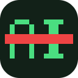

Weedout for YouTube
A Safari extension that quietly removes videos YouTube labels as “Made with AI” — from your feed, search, related videos and Shorts.
What it does
- Filters AI-labeled videos out of home, search, related, playlists and Shorts shelves
- Auto-skips AI-labeled Shorts in the Shorts player (optional)
- Dim mode shows what would be removed before you trust it
- Runs entirely on your Mac — no accounts, no tracking, no data collection
Support
Questions, bug reports, or a video that slipped through?
Email masteranza@gmail.com — include the video link if it’s about detection.